Префектура Вакаяма · долина реки Кинокава · история
По следам братьев Тоётоми: где в Вакаяме война сменилась возрождением
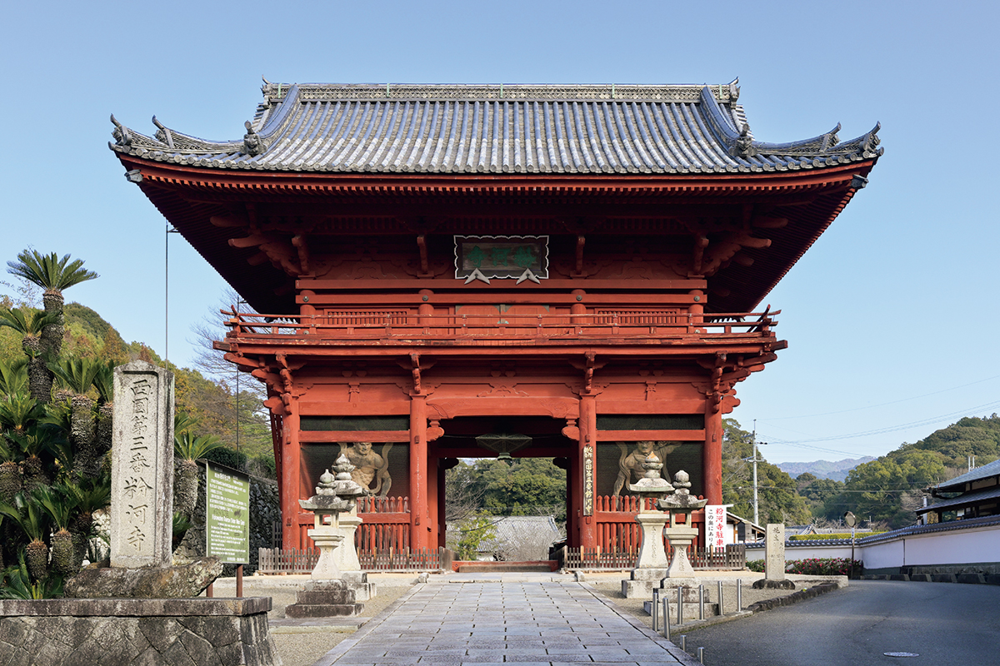
Хидэёси Тоётоми объединял Японию, а его младший брат Хидэнага был рядом. Их путь прошёл и через край Кисю, нынешнюю префектуру Вакаяма: сюда братья принесли сначала войну, а потом мир. Пройти по их следам значит своими глазами увидеть, как менялась эпоха.
Хроника
Братья Тоётоми и край Кисю
Хидэнага Тоётоми (1540–1591) был младшим братом Хидэёси Тоётоми (1537–1598), полководца, который в конце XVI века объединил раздробленную Японию. Хидэёси прославился как завоеватель, а Хидэнага остался в истории как один из самых умных военачальников эпохи воюющих провинций: он умел договариваться там, где другие брали силой. В 2026 году Хидэнага стал главным героем большого исторического телесериала.
Для Вакаямы, которую в старину называли Кисю, история братьев укладывается в несколько дат:
- 1585 год: Хидэёси идёт походом на Кисю. Хидэнага поручает военачальнику Такатора Тодо построить замок Вакаяма. Монах Ого договаривается с Хидэёси о мире, и край начинает восстанавливаться.
- 1591 год: Хидэнага умирает.
- 1594 год: Хидэёси поднимается на гору Коя.
- 1598 год: умирает Хидэёси.
Война
Поход на Кисю: храмы Нэгородзи и Кокавадэра
Хидэёси выступил на Кисю в марте 1585 года. Краем тогда правили не князья, а храмы и местные воины. Самой грозной силой были воинственные монахи храма Нэгородзи: они одними из первых на главном острове Японии научились делать огнестрельное оружие и пугали князей по всей стране. Подчинить их стало главной целью похода, а заместителем Хидэёси в войске был его брат Хидэнага.
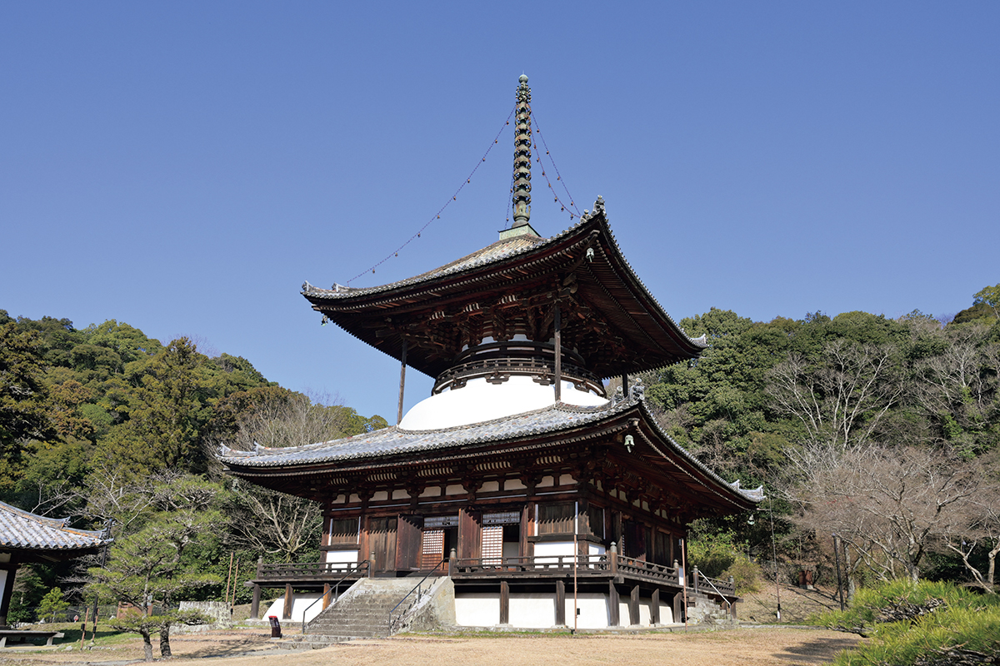
По одной из версий, когда войско Хидэёси подошло к храму, монахи уже не хотели сражаться: слишком велика была разница в силах. И к этому, как считают, приложил руку Хидэнага.
«Говорят, что храм пал без боя не только из-за силы противника. Многое решило умение Хидэнаги вести переговоры»
представитель храма Нэгородзи
Хидэнага заставил сдаться две крепости, которые войска Кисю держали в соседней провинции Идзуми. Тем, кто был готов снять монашеский сан и пойти к нему на службу, он обещал жизнь и безопасность. Эта гибкость, умение побеждать не только оружием, и сделала его одним из лучших стратегов своего времени.
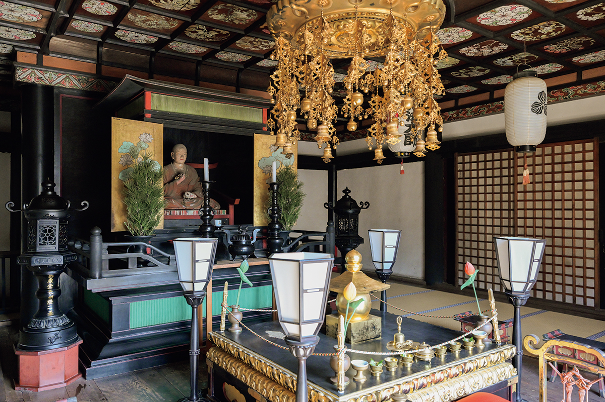
Монахи Нэгородзи почти не сопротивлялись, но храм всё равно сгорел: огонь уничтожил всё, кроме большой пагоды и зала Дайси-до. Та же судьба постигла соседний храм Кокавадэра, лишившийся большей части построек. Его возродили позже, при покровительстве ветви рода Токугава, правившей в Кисю.
Храм Нэгородзи
- Адрес
- префектура Вакаяма, Ивадэ, Нэгоро, 2286
- Телефон
- +81 736-62-1144
- Часы работы
- ноябрь–март 9:10–16:00, апрель–октябрь 9:10–16:30
- Выходные
- без выходных
- Цены / Вход
- 500 иен
- Сайт
- negoroji.org
Храм Кокавадэра
- Адрес
- префектура Вакаяма, Кинокава, Кокава, 2787
- Телефон
- +81 736-73-4830
- Часы работы
- 8:00–17:00
- Выходные
- без выходных
- Цены / Вход
- 400 иен (только внутреннее святилище главного зала)
- Сайт
- kokawadera.org
Возрождение
Как монах Ого спас гору Коя
Гору Коя, главный центр эзотерического буддизма, тоже ждало нашествие. Её спас монах Ого, выходец из самурайской семьи: он сам отправился к Хидэёси и добился мира. С тех пор Хидэёси ему доверял. Ого руководил восстановлением 25 залов и пагод на горе, а потом участвовал и в других стройках, которые затевал Хидэёси.
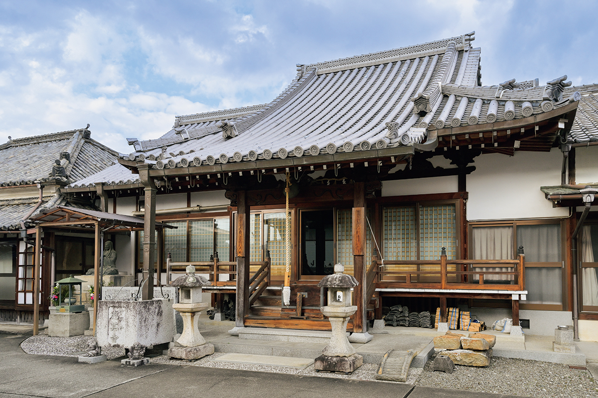
На гору Коя ведёт несколько паломнических троп. Тропа Курокомити поднимается из нынешнего Хасимото к вершине почти напрямик. По преданию, Хидэёси спускался по ней верхом, когда его застала внезапная гроза. Тропа входит в объект Всемирного наследия ЮНЕСКО.
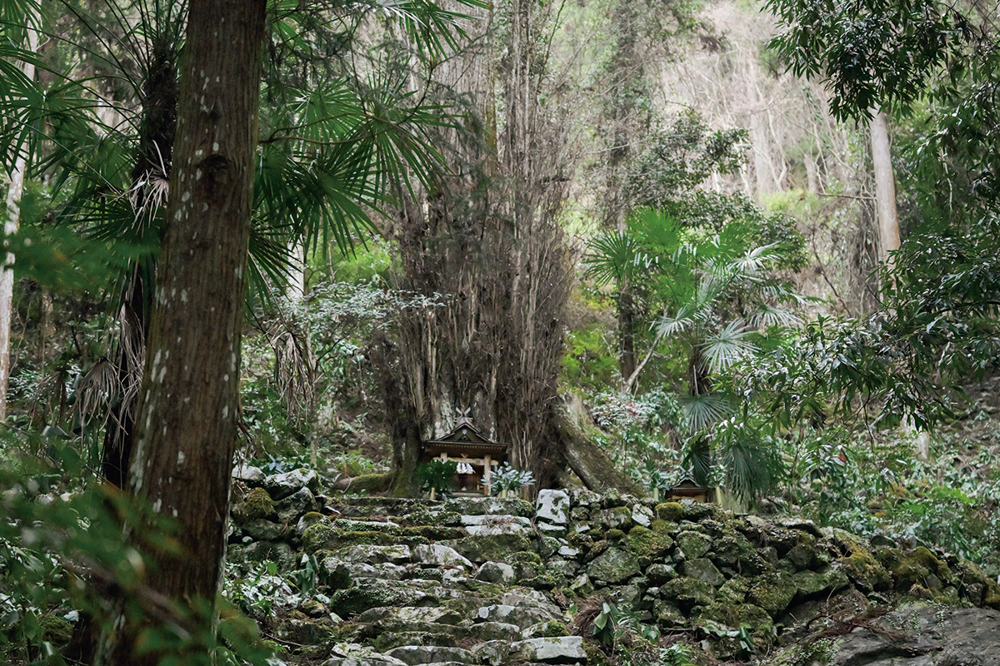
«Хидэёси шёл с женой Нэнэ, Тосииэ Маэдой и другими, всего около 5000 человек. Возможно, они заполнили Курокомити сверху донизу»
исследователь из университета Коясан, участвовавший во внесении тропы в список наследия
Около 16 километров горной дороги проходят через смешанный лес, вдоль ручьёв и по замшелым каменным ступеням. Здесь тихо, и лучшего места, чтобы подумать о жизни братьев Тоётоми, пожалуй, не найти.
Храм Огодзи
- Адрес
- префектура Вакаяма, Хасимото, Хасимото, 2-3-4
- Телефон
- +81 736-32-0218
- Часы работы
- 7:00–17:00
- Выходные
- без выходных
- Цены / Вход
- бесплатно
Тропа Курокомити
- Адрес
- префектура Вакаяма, уезд Ито, Кудояма, Итидайра (святилище Касуга)
Где увидеть и попробовать
Лак, суши с аю и старая гостиница
Где история, там и культура. У храмов Нэгородзи и Кокавадэра и на ведущих к ним улицах можно увидеть лак нэгоро-нури, который появился как посуда для монахов, и попробовать местную еду: рисовую кашу на чае тягаю и суши с аю.
Кафе «Нэкоро» (NEKORO CAFÉ)
Кафе держит мастер лака нэгоро-нури, стиля, от которого ведут начало знаменитые лаки Вадзимы и Айдзу. Здесь подают лёгкие закуски и сезонные парфе, так что сюда удобно зайти передохнуть после прогулки по Нэгородзи. Изделия нэгоро-нури выставлены и продаются, а по предварительной записи можно попробовать покрыть вещь лаком самому.
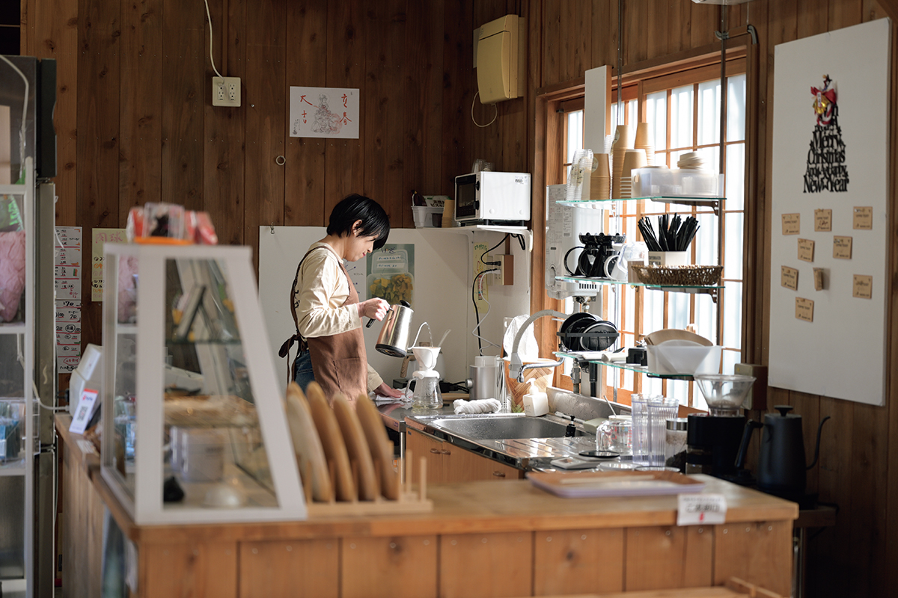
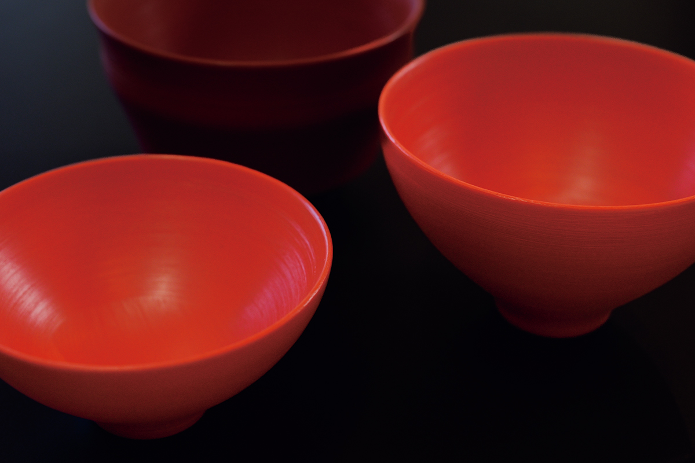
Кафе «Нэкоро»
- Адрес
- префектура Вакаяма, Ивадэ, Нэгоро, 2184
- Часы работы
- 11:00–16:00
- Выходные
- вторник, среда, пятница (в праздничные дни открыто)
«Тикара-суши»
Когда-то суши с аю делали в каждом доме Кисю. «Тикара-суши» продолжает эту традицию и готовит их из аю, выросшей в чистой реке Кинокава. Фирменные суши с аю стоили 1300 иен в 2026 году. Рыбу сначала обжаривают до румяной корочки без соли и соуса, а затем долго томят в бульоне по секретному рецепту, и она становится мягкой и сладковатой.
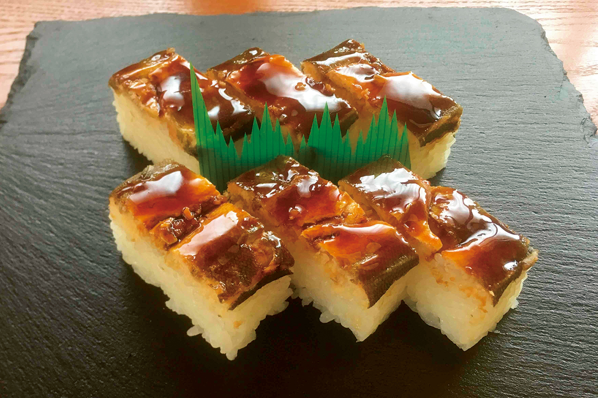
«Тикара-суши»
- Адрес
- префектура Вакаяма, Кинокава, Кокава, 10-6
- Телефон
- +81 736-73-6670
- Часы работы
- обед 11:00–17:00, ужин по предварительной записи
- Выходные
- понедельник
Гостиница «Кинокава Микасакан»
На улице, ведущей к храму Кокавадэра, стоит бывшая гостиница, которой больше ста лет. В 2024 году её перестроили и открыли заново: теперь здесь можно переночевать, посидеть в кафе и сходить в сауну. Старые раздвижные двери и перегородки сохранили, и ностальгическая атмосфера дома хорошо подходит к такому путешествию. Ночь с ужином и завтраком стоила от 15 000 иен с налогом и платой за обслуживание в 2026 году.
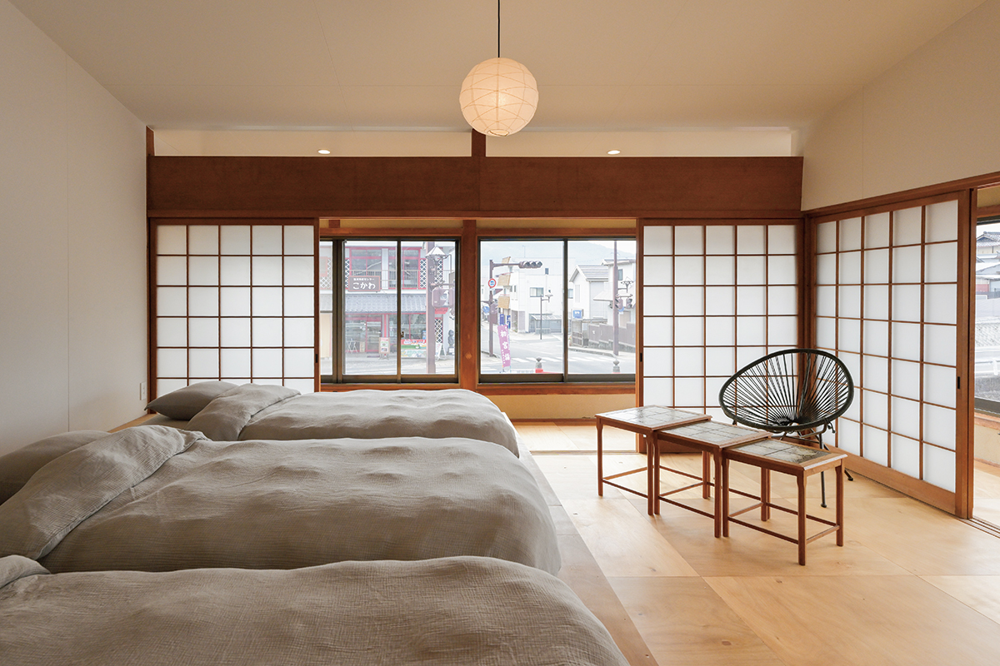
«Кинокава Микасакан»
- Адрес
- префектура Вакаяма, Кинокава, Кокава, 2086
- Телефон
- +81 736-67-7010
- Цены / Вход
- ночь с ужином и завтраком от 15 000 иен (с налогом и платой за обслуживание)
- Сайт
- mikasakan.com
Придорожная станция «Кусигаки-но сато»
Здесь продают «хорошее из своих мест»: фермерские продукты и сувениры. В городке Кацураги фрукты собирают круглый год, и ресторан станции этим пользуется: в меню десерты из фруктов и даже карри с местной хурмой.
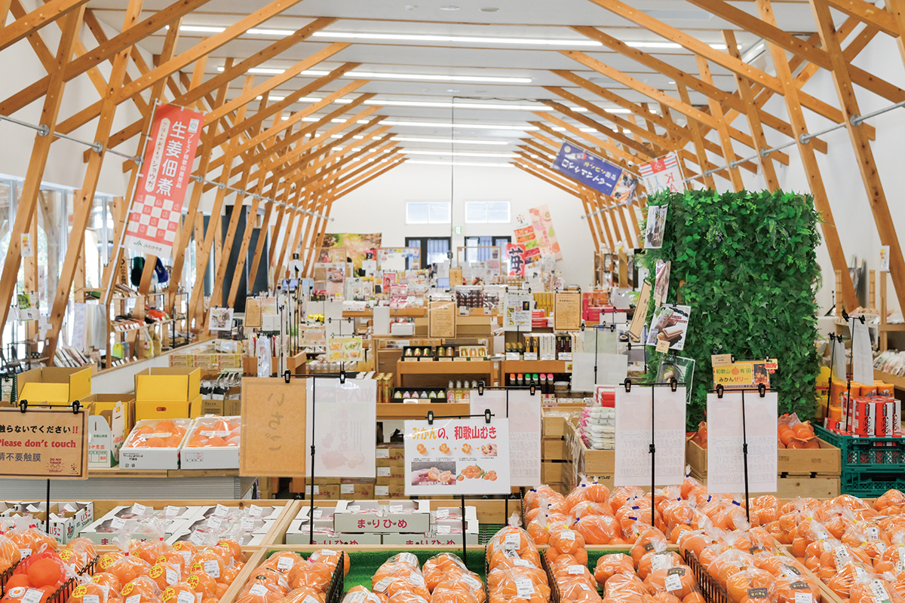
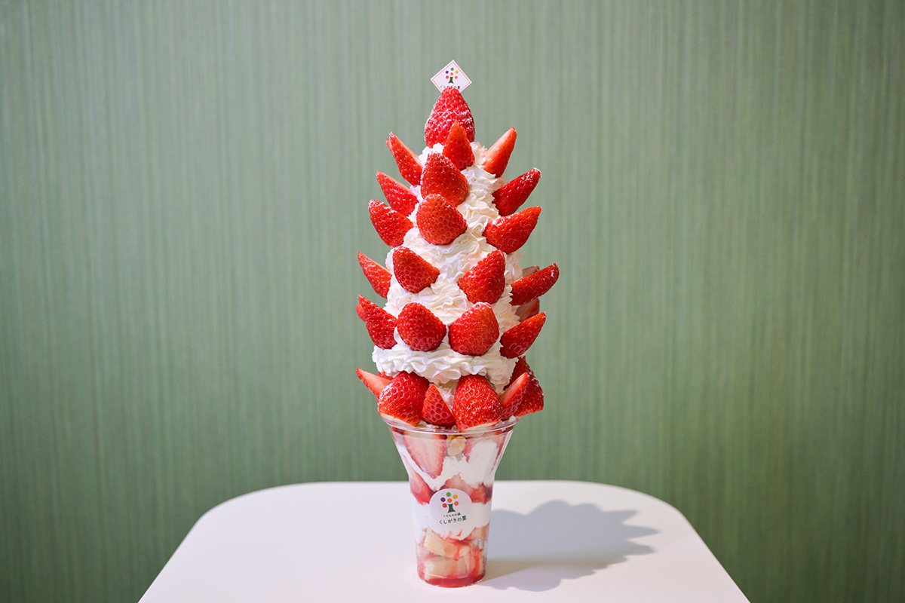
Придорожная станция «Кусигаки-но сато»
- Адрес
- префектура Вакаяма, уезд Ито, Кацураги, Таки, 53-1
- Телефон
- +81 736-25-0155
- Часы работы
- магазин и пекарня 9:00–17:00, ресторан 10:00–17:00 (последний заказ в 16:30)
- Выходные
- без выходных
Фото: Такаси Гоми.